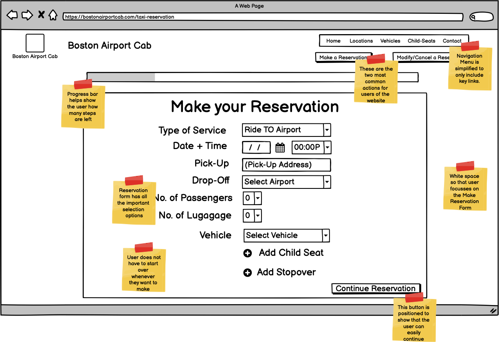
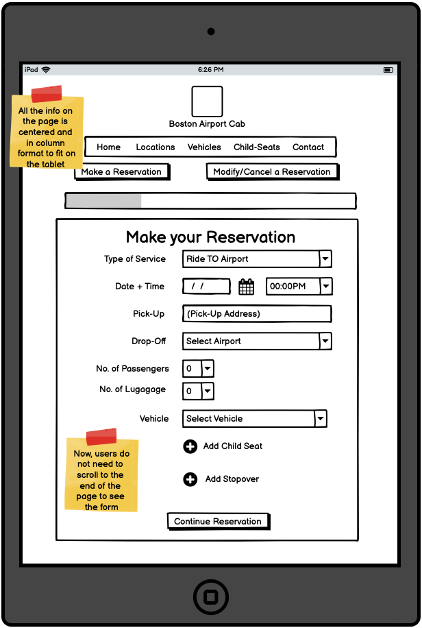
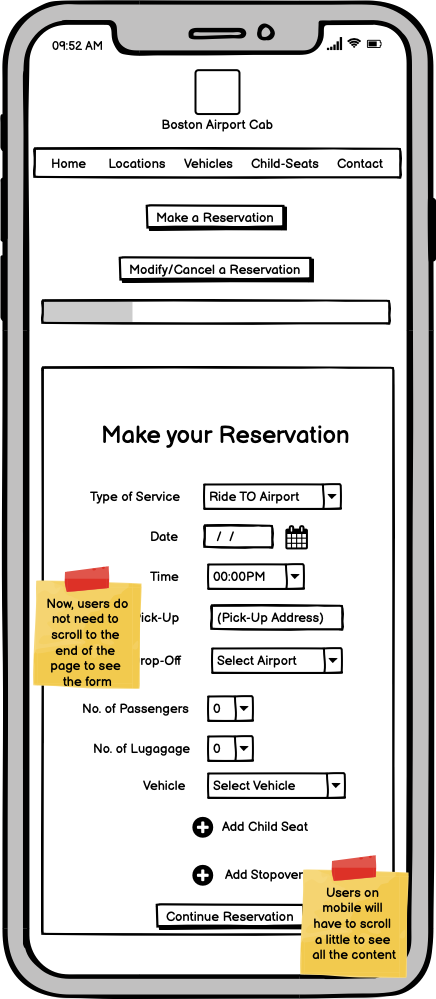
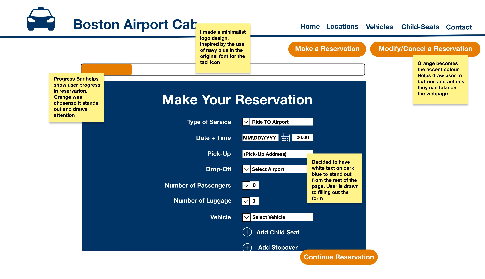
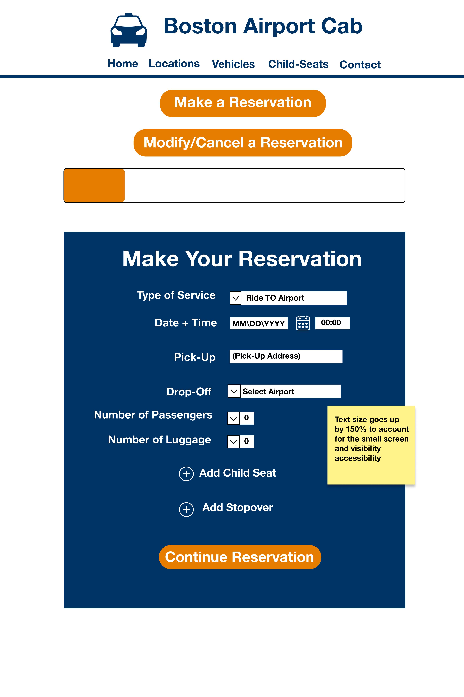
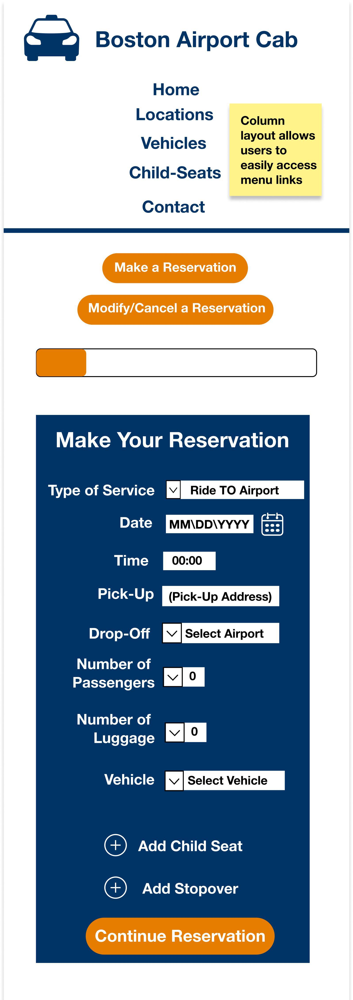
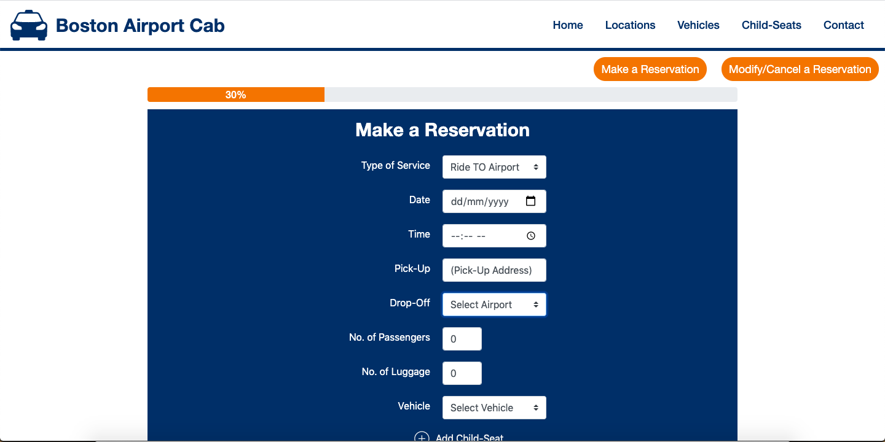

Whenever I fly back to Providence, I use Boston Airport Cab to book a car from Boston's Logan Airport to Providence. However, I often find myself confused with the online reservation process.
So I thought it would be a valuable UI/UX task to look at the reservation webpage and ...
Using Jakob Nielsen's 10 Usability Heuristics for User Interface Design, I identified usability issues that can be addressed in my redesign.
| Heuristic | Rating | Notes |
|---|---|---|
| 1: Visibility of system status | ★ | Nothing indicates status of reservation booking progress |
| 2: Match between system and the real world | ★ ★ | The reservation booking form is consistent with forms on Airbnb, Expedia and other taxi reservation services |
| 3: User control and freedom | ★ | If a user wants to go back and change reservation properties, all previously selected inputs are cleared. The user has to start over |
| 4: Consistency and standards | ★ ★ ★ | The same language is used to refer to the properties of booking (e.g. Vehicle, Passengers) |
| 5: Error prevention | ★★★ | Errors are indicated if the user tries to continue their reservation |
| 6: Recognition rather than recall | ★ ★ ★ | Option to start a reservation stands out as it is a separate section on the page in a visual layout that stands out |
| 7: Flexibility and efficiency of use | ★ ★ | Users can go back and change reservation properties. Users can go straight to the reservation form and start a reservation. |
| 8: Aesthetic and minimalist design | ★ | There is a lot of irrelevant information that clutters the webpage design. (E.g. images, repeated instructions) There is some information that is better left on the Home and About page e.g. TripAdvisor Reviews. User can get confused and find it hard to focus on the information and actions they need. On smaller devices the user has to scroll until the end to get to reservation form |
| 9: Help users recognize, diagnose, and recover from error | ★ ★ ★ | There are error messages that tell the user if they've chosen an unsuitable vehicle for the selected number of passengers/luggage. |
| 10: Help and documentation | ★ | The webpage has both written and video instructions to make a reservation. However, if designed well, instructions are not needed. |
The biggest change was the omission of unnecessary information. Users click on the make a reservation link with the intention of making a reservation. Therefore in the redesign, I focussed on the form, where users fill select options for their reservation. In this design, the user should be able to use the form without additional instruction.
If the user is a first time user and therefore wants to learn more about child-seats, vehicles, and stopovers, the menu links are accessible at the top of the for further information. With this design, returning users and focus making the booking, and only use the menu links if needed.
  The hi-fi prototypes look pretty much like the lo-fi prototypes. I focussed on keeping the colours and look very simple. The orange works as an accent colour for the buttons and progress bar. The navy blue works as the main colour.
  Using Flex Box and Bootstrap, I was able to implement the redesign of the page in HTML and CSS. You'll notice that in this redesign, the user is able to easily change options without having to restart their reservation.
From this task, I was able to address the usability issues that I personally found whenever I used BostonAirportCab to book my ride back to Providence. I found usability analysis and prototyping, so valuable in making a stronger usable webpage. As a frequent user, I'd love to see BostonAirportCab implement a design like this so that I can personally enjoy the pleasant user experience that matches up to the great rider experience I have.